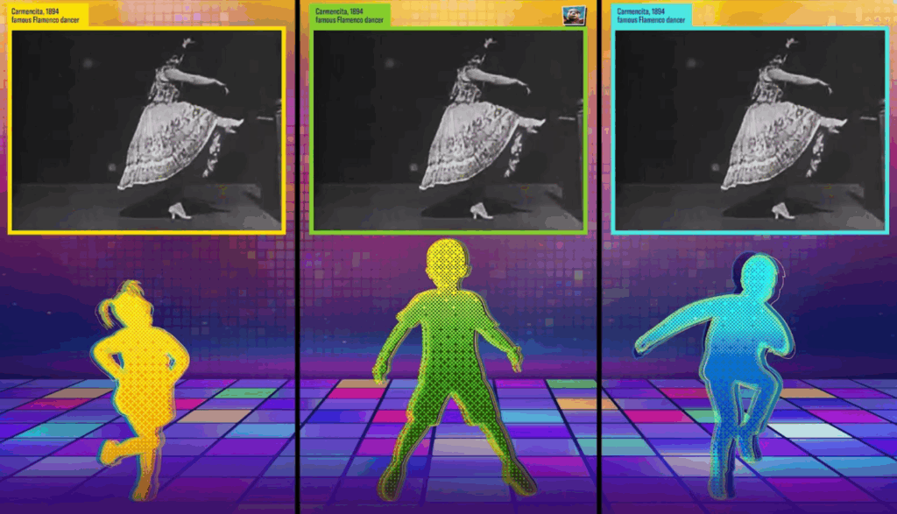
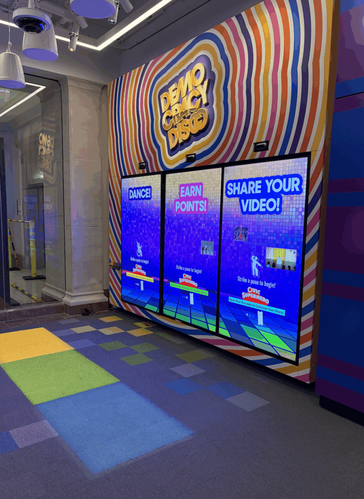

Built during my Software Engineer internship at Cortina Productions, Summer 2025. Now deployed at the National Archives Museum Discovery Center in Washington, DC.
To read more about the Discovery Center, check out the Overview, Visitor Info, and the National Archives Foundation.
Democracy Disco is an interactive dance station in the National Archives Museum’s Discovery Center. Up to three visitors play short dance clips from the National Archives’ film holdings, then recreate the moves themselves during a scored performance round. Gesture-sensing technology evaluates their accuracy and awards points, and visitors can save a recording of their performance.
The experience shows how Americans have expressed themselves through dance for over a century, with footage ranging from Edison’s studio films in 1894 to Pearl Harbor anniversary celebrations. It is used by the public, especially young visitors, as a hands-on educational experience.
Built Unity front-end experiences driven by a producer-facing backend interface, using custom APIs to dynamically load assets and scene data.
Integrated Nuitrack/Orbbec gesture tracking APIs with Unity FBX avatars to mirror real-time user movement.
Developed boundary detection systems in C# that monitor physical positioning and trigger timeout protocols when users step out of the interactive zone.
Collaborated in a multi-developer Agile environment using Git version control (Bitbucket) and SourceTree for branch management, code reviews, and CI/CD pipeline integration.
Gained full-stack familiarity with the Unity development pipeline, including render pipelines (URP/HDRP), asset management, and deployment workflows.
• Unity Engine & C# scripting
• Nuitrack / Orbbec gesture tracking
• Custom APIs & producer-facing backend
• Git (Bitbucket) & SourceTree
• URP / HDRP render pipelines

